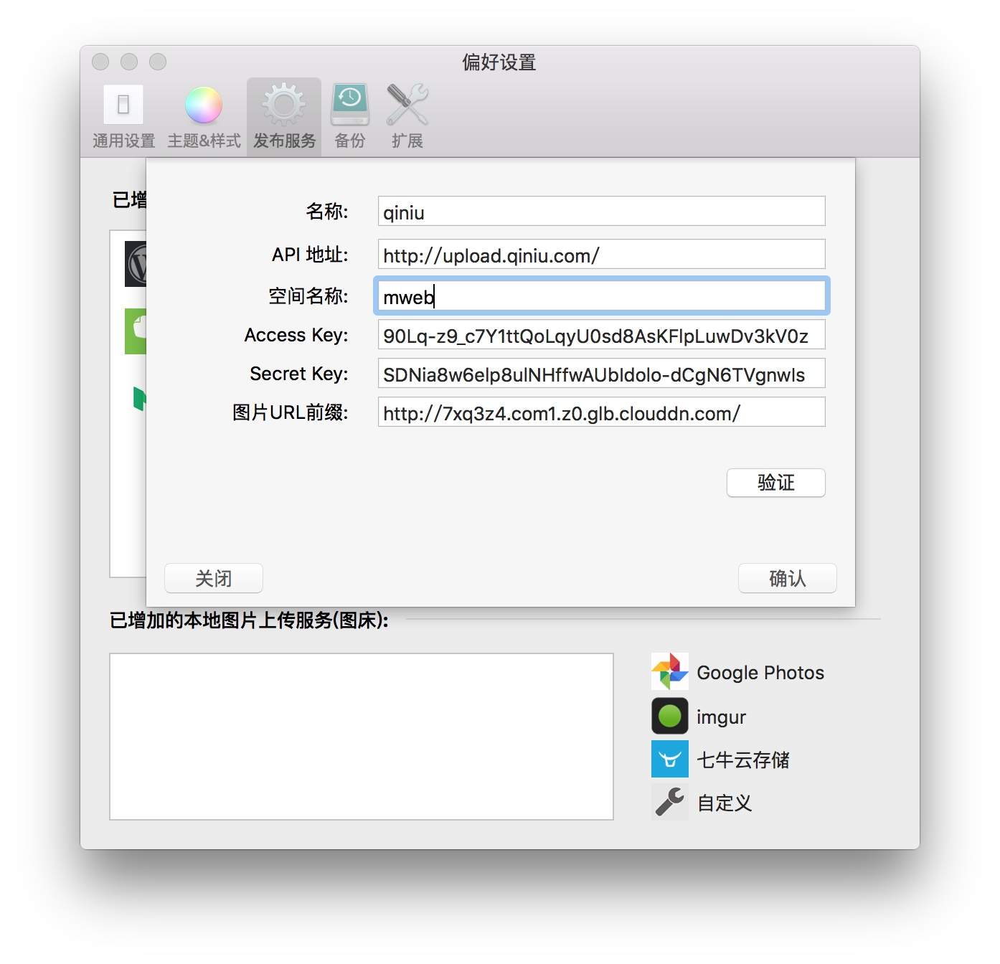
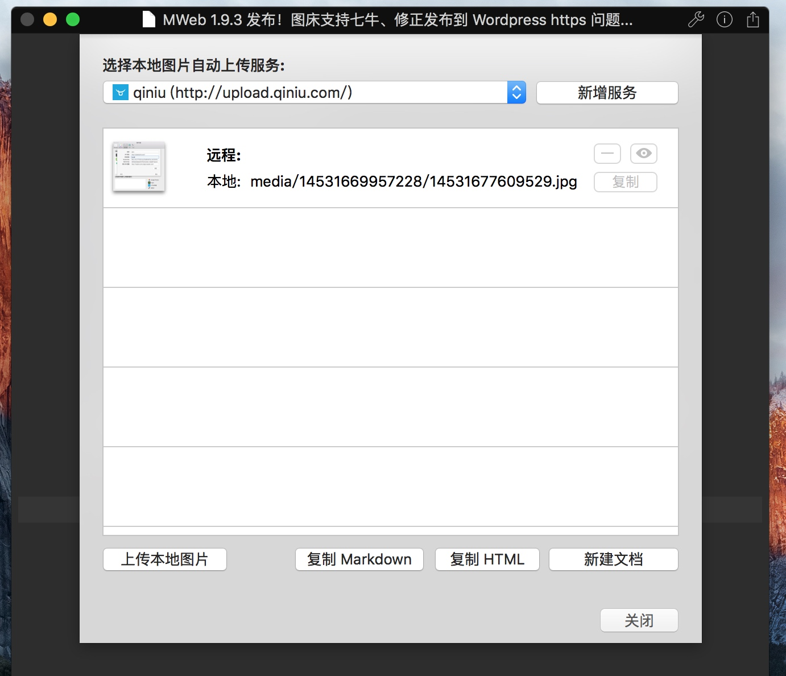
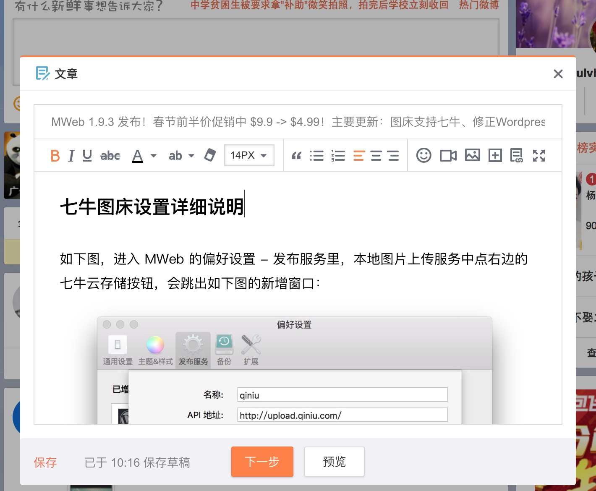

MWeb 1.9.3 发布！图床支持七牛、修正发布到 Wordpress https 问题、中文版不能发布到 Medium 问题等
详细更新说明：
新增：
- 图床功能现在支持七牛 (qiniu.com) 了
- 文档库增加清倒废纸篓功能
- 全屏快捷键：Control + CMD + F
- 发布到印象笔记时会记住上一次选择的笔记本
修正：
- 发布到 Wordpress 和 MetaWeblog API 不支持 https 问题
- 中文版不能发布到 Medium 问题
- 导出 PDF 选择带目录时某些情况下目录结构不对问题
- 特殊文档不能正确解析问题（CPU 100%，切换文档不能显示）
- 像 wow_great_stuff 这种写法不会解析成下划线了
- 其它一些 Bug 修正和细节改进。
七牛图床设置详细说明
如下图，进入 MWeb 的偏好设置 - 发布服务里，本地图片上传服务中，点右边的 七牛云存储 按钮，会跳出如下图的新增窗口：

- 名称：填入自定的名称即可。
- API 地址：用默认这个即可，也可以用另外的，详细请参考：http://developer.qiniu.com/docs/v6/api/reference/up/upload.html 请求头部中的 Host 那里。
- 空间名称：你在七牛中新增的空间的名称。
- Access Key 和 Secret Key：在 七牛个人首页 - 帐号 - 密钥 中可以找到，网址通常为：https://portal.qiniu.com/setting/key。
- 图片 URL 前缀：这个要去到空间，随便上传一张图，选中后就可以看到外链地址，这样就知道 URL 前缀了。
设置完后可以点验证按钮，选择一张图片验证一下是否设置成功。设置成功后，打开要把本地图片上传到图床的文档，点软件右上角的 分享 按钮，在弹出的菜单中选择 把本地图片上传至图床 ，如下图：

上面的下拉框可选择增加了的图床服务，中间会列出文档中的所有本地图片。选择刚刚新增的图床服务，点 上传本地图片 按钮即可。当文档中有新增的本地图片，重新调出这个界面，再点 上传本地图片 按钮即可把新增的图片上传。
分享一个图床服务的使用小技巧
一般的博客、文章服务网站都支持查看 HTML 原码和直接填入 HTML 代码的，这种的话，点击本地图片上传至图床窗口中的 复制 HTML 按钮，然后粘贴即可。但是也有很多网站是不支持直接填入 HTML 代码的，比如说微薄中的发文章功能、微信公共号中的发文章功能等等。对于这些，可以点击 新建文档 按钮，这时 MWeb 会把文档中的本地图片地址替换为上传到图床后的地址并打开新建的文档。选择 视图菜单 - 实时预览 或者用快捷键 CMD + R 打开实时预览窗口，然后 CMD + A 全选预览中的文本和图片，CMD + C 复制。 然后再用 CMD + V 粘贴进不支持填入 HTML 代码的网站即可。下图为我粘贴到微薄文章中的效果。
